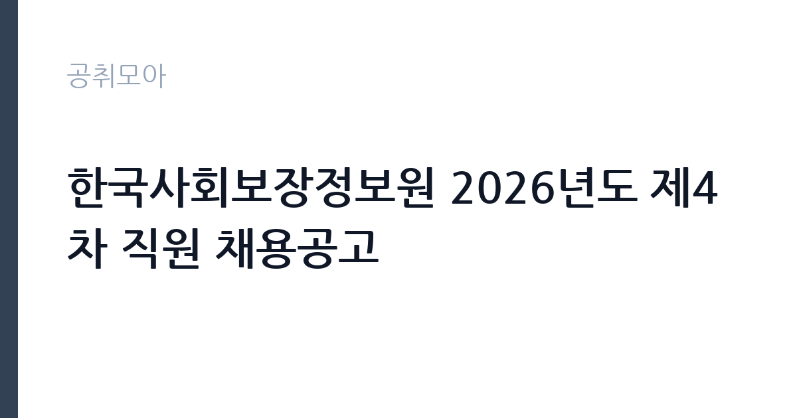

[공공기관] 한국사회보장정보원 2026년도 제4차 직원 채용공고
한국사회보장정보원 · 서울 · 마감 2026-11-16 (D-14) · 출처 나라일터

한눈에 보는 모집 조건
| 기관 | 한국사회보장정보원 |
|---|---|
| 공고명 | 한국사회보장정보원 2026년도 제4차 직원 채용공고 |
| 고용형태 | 기간제 |
| 근무지 | 서울 |
| 게시일 | 2026-11-02 |
| 마감일 | 2026-11-16 (D-14) |
지원자격, 이렇게 읽으세요
- 기간제(전산직) 12명 기간제(행정직) 7명 기간제(상담사) 1명 육아휴
- 접수 ~2026-11-16 마감
- 세부 조건은 원문 공고문 확인
기간제 근로자는 근로계약 기간이 정해진 신분입니다. 계약 기간과 갱신 가능 여부가 근로계약서에 명시되며 기간 만료 시 근로관계가 종료됩니다. 결원 보충이나 특정 사업 기간에 맞춰 채용되는 경우가 많아 업무 범위가 명확합니다. 이번 공고는 한국사회보장정보원에서 직접 진행하는 자체 전형으로, 응시자격과 제출서류는 공고문에 항목별로 제시됩니다. 전산 직무는 중급기술자 자격 후 3년 이상 경력, 기사 자격 후 3년 이상 경력, IT 관련 경력 7년 이상 등 요건 가운데 하나를 충족해야 합니다. 전산초급(보안)은 정보보안기사 자격이나 정보보안 경력이 기준입니다. 행정나급은 채용 관련 분야 3년 이상 경력이나 석사학위를 요구하고, 상담사는 금융·복지 상담 경력을 봅니다. 보건관리자는 간호법에 따른 간호사로서 관련 경력 2년 이상이 요건입니다. 직무별 요건이 크게 다르므로 공고문 표를 그대로 대조하십시오. 서류는 접수 마감 이후 보완이 되지 않으므로 자격 요건과 증빙 서류를 마감 전에 모두 갖춰야 합니다. 공고문에 명시된 우대 사항은 해당 여부를 확인해 증빙을 첨부해야 가점이 반영됩니다. 공고문의 응시자격 표를 보면 자격 항목이 여러 줄로 나뉘어 있으므로, 각 줄을 하나씩 체크하며 본인 해당 여부를 표시해 두면 누락을 줄일 수 있습니다. 이 공고 원문에 적힌 응시 조건 문구는 '중급기술자 자격 취득 후 3년 이상 소프트웨어 기술 분야의 업무를 수행한 자 2.' / '박사학위를 가진 자로서 기사 자격 또는 산업통상자원부 장관이 고시하는 해당 등급의 공인 민간 자격을 취득한 자 3.' / 'IT 관련 경력 7년 이상인 자로서 채용 관련 업무 경력자 - (전산중급) 1.'입니다. 문구를 그대로 읽고 본인 해당 여부를 하나씩 표시해 두면 서류 단계에서 탈락하는 일을 줄일 수 있습니다.
이 공고의 포인트
이 공고의 첫 번째 포인트는 고용 형태입니다. 계약 기간이 정해져 있어 근무 종료 시점이 명확합니다. 그만큼 짧은 기간에 어떤 실적을 남길지가 중요해집니다. 두 번째는 업무 범위가 명확하다는 점입니다. 기간제(전산·행정·상담) 직무로 채용되므로 배치 이후 담당 업무가 크게 흔들리지 않습니다. 세 번째는 근무지입니다. 서울 지역 근무로 접근성은 좋지만 그만큼 지원자가 몰리는 지역이므로 경쟁률을 넉넉히 잡아야 합니다. 선발 절차가 단순한 편이어서 서류와 면접 준비에 집중할 수 있습니다. 같은 직무로 함께 올라온 공고 6건 가운데 마감이 중간에 위치하므로 다른 공고와 일정이 겹치는지 확인하십시오. 선발 인원이 12명으로 규모가 있어 서류와 면접 점수를 함께 관리하는 전략이 필요합니다.
전형은 어떻게 진행되나
채용 절차는 공고문에 안내된 순서대로 진행되며, 서류 접수 마감 후에는 추가 접수나 서류 보완이 이뤄지지 않는 것이 원칙입니다. 서류심사에서는 응시자격과 제출서류의 형식 요건을 기계적으로 확인하므로, 경력 증명서의 기간과 직무 내용이 공고의 요건과 정확히 맞아야 합니다. 면접은 지원자 수에 따라 집단면접과 개별면접으로 나뉘고, 직무 관련 질문과 상황 대응 질문이 함께 나옵니다. 합격자 발표는 개별 통보 또는 홈페이지 게시로 이뤄지며 이후 임용 절차가 진행됩니다. 응시 수수료가 있는 경우 환불 기준과 기한이 정해져 있으니 접수 전에 확인하십시오.
원문에서 확인한 전형 방식
□ [기간제 및 육아휴직대체] - (전산고급) 1. 중급기술자 자격 취득 후 3년 이상 소프트웨어 기술 분야의 업무를 수행한 자 2. 박사학위를 가진 자로서 기사 자격 또는 산업통상자원부 장관이 고시하는 해당 등급의 공인 민간 자격을 취득한 자 3. IT 관련 경력 7년 이상인 자로서 채용 관련 업무 경력자 - (전산중급) 1. 기사의 자격을 취득한 자로서 3년 이상 소프트웨어 기술 분야의 업무를 수행한 자 2. 기사자격 또는 산업통상자원부장관이 고시하는 해당 등급의 공인 민간 자격을 취득한 자로서 석사학위 취득 후 2년 이상 소프트웨어 기술 분야의 업무를 수행한 자 3. IT 관련 경력 5년 이상인 자로서 채용 관련 업무 경력자 - (전산초급, 일반) 1. 기사 자격을 취득한 자 2. IT 관련 경력자로서 채용 관련 업무 경력자 - (전산초급, 보안) 1. 정보보안기사 자격을 취득한 자 2. 정보보안 경력자로서 채용 관련 업무 경력자 - (행정나급) 1. 채용 관련 분야에서 3년 이상 근무한 자 2. 채용 관련 분야 석사학위 취득자 - (행정다급, 보건관리자) 1. 「간호법」에 따른 간호사로서 간호사 관련 경력 2년 이상인 자 - (상담사) 1. 금융, 보
이런 분께 추천해요
- 지원 직무의 자격·경력 요건을 충족하는 분
- 전산 개발·운영 또는 상담·행정 실무 경험이 있는 분
- 기간제·육아휴직대체 계약 기간을 수용할 수 있는 분
지원 전 체크리스트
- 응시자격 요건과 경력 기준을 충족하는가 — 경력은 증명서로 입증해야 합니다
- 계약 기간과 근무 시작일·종료일을 확인했는가
- 제출서류 목록을 모두 준비했는가 — 누락 시 서류 단계에서 탈락합니다
- 접수 마감 2026-11-16 이전에 접수 방식을 확인해 제출했는가
모집 일정과 제출 타이밍
접수 마감은 2026-11-16이고 공고는 2026-11-02에 게시되었습니다. 준비 기간 14일 안에 서류 작성, 증빙 발급, 접수를 모두 마쳐야 하므로 주말을 포함해 일정을 미리 나누는 것이 좋습니다. 특히 경력 기술서나 직무수행계획서를 요구하는 공고는 작성에 시간이 걸리므로 첫날 초안을 잡으십시오. 서류 합격자 발표와 면접 사이 간격이 짧은 경우가 많아 면접 예상 질문은 서류 제출 전에 정리해 두는 편이 유리합니다. 마감 직전에는 접속이 몰리므로 여유를 두고 제출하십시오. 마감 이후에는 어떤 사유로도 접수가 인정되지 않으므로 하루 전 제출을 목표로 하십시오. 서울 근무지는 대중교통 접근성이 좋은 대신 주차와 통근 시간이 변수입니다. 출퇴근 경로를 미리 확인하십시오. 마감까지 2주 안팎이 있어 준비할 시간은 있지만 미루면 촉박해집니다. 선발 인원이 한 자릿수를 넘어 서류와 면접 점수를 함께 관리하는 전략이 필요합니다.
직무 이해하기: 공공기관
한국사회보장정보원은 사회보장 정보시스템을 구축·운영하는 준정부기관으로, 복지 급여 신청과 자격 확인을 전산으로 처리하는 기반을 담당합니다. 이번 4차 채용은 기간제와 육아휴직대체 인력을 직무별로 나누어 선발합니다. 전산 직무는 시스템 개발과 운영, 보안 관리를 맡고, 행정 직무는 사업 운영과 계약·예산 지원을, 상담사는 이용자 문의 응대와 사례 안내를 담당합니다. 보건관리자 직무는 간호사 자격자를 대상으로 별도 선발합니다. 직무별 요건과 인원이 표로 제시되므로 본인 해당 행을 먼저 확정해야 합니다. 업무 강도와 근무 시간대는 부서 배치에 따라 달라지므로 면접에서 확인하는 것이 가장 정확합니다.
자기소개서 작성 팁
지원서 첫 문단에서 지원 직무를 분명히 밝히는 것이 가장 중요합니다. 여러 직무가 한 공고에 담겨 있어 어느 자리에 지원했는지 드러나지 않으면 준비도가 낮게 평가됩니다. 전산 직무는 프로젝트 단위로 문제·해결·결과를 정리하고, 행정·상담 직무는 처리 건수와 개선 사례를 수치로 제시하십시오. 사회보장 정보시스템의 공공성이 이해된다는 점을 한 문단 더하면 차별화됩니다. 문항별 글자 수 제한을 먼저 확인하고, 각 문항의 첫 문장에 결론을 배치하는 방식이 읽기 쉽습니다. 지원 동기는 기관의 어떤 사업에 기여하겠다는 한 문장으로 시작하고, 이어서 본인의 경험을 근거로 붙이십시오. 감점을 피하려면 다른 기관에 보낼 수 있는 범용 문장을 그대로 쓰지 않는 것이 중요합니다. 기관 이름과 사업명이 문장 안에 자연스럽게 들어가야 준비도가 드러납니다.
면접 준비 포인트
면접은 지원 직무의 실무를 기준으로 진행됩니다. 전산 직무는 수행한 프로젝트의 규모와 사용 기술, 장애 대응 방식을 구체적으로 답해야 합니다. 행정 직무는 사업 운영과 예산 집행 경험을, 상담사는 응대 사례와 갈등 처리 방식을 제시하십시오. 기간제·육아휴직대체라는 신분을 인정하고 계약 기간에 무엇을 해낼 수 있는지 계획으로 답하는 편이 좋습니다. 답변은 상황, 판단, 조치의 순서로 정리하면 전달이 분명해집니다. 모르는 질문에는 모른다고 밝히고 확인 방법을 제시하는 편이 억지 답변보다 낫습니다. 마지막에는 근무 의사와 함께 2026-11-16 이후 일정에 언제든 응할 수 있다는 점을 전달하십시오. 마지막 질문 시간에는 근무 조건에 대한 확인 사항을 한 가지 정도 준비해 가면 성실성이 드러납니다.
급여·근무조건 읽는 법
한국사회보장정보원은 알리오 경영공시 대상 기관으로 정규직 평균보수와 신입 초임이 매년 공시됩니다. 다만 이번 공고는 기간제와 육아휴직대체 채용이라 공시된 정규직 평균값이 그대로 적용되지 않고, 직무별 임금 기준과 계약 기간에 따라 보수가 정해집니다. 월 급여와 계약 개월 수를 곱한 총액으로 비교하고, 수당과 4대 보험 적용 여부를 확인하십시오. 구체적 금액은 공고문 처우표에서 확인할 수 있습니다. 2026년 적용 최저임금은 시급 10,320원, 월 환산 2,156,880원(주 40시간·209시간 기준)입니다. 고용노동부 고시 제2025-47호로 확정된 금액입니다. 공고문에 금액이 제시되지 않은 항목은 원문 보수표나 처우 설명에서 확인해야 하며 확인되지 않은 수치는 쓰지 않는 것이 원칙입니다. 비교할 때는 월 급여뿐 아니라 상여·명절휴가비·복지포인트·초과근무수당까지 포함한 연간 총액으로 계산하십시오. 기간제라면 계약 기간 동안의 총액을, 무기계약이라면 호봉 상승과 정년까지의 누적 소득을 기준으로 판단하는 편이 정확합니다.
자주 묻는 질문
- 선발 인원은 몇 명인가요?
공고문 기준 12명입니다. 직종별로 인원이 나뉘는 경우가 있으니 모집분야 항목을 함께 확인하십시오. - 근무지는 어디인가요?
서울 지역의 한국사회보장정보원 소속 근무지입니다. 세부 주소와 출퇴근 조건은 원문 공고문에서 확인할 수 있습니다. - 보수는 얼마인가요?
채용 신분(기간제)과 기관 임금 규정에 따라 정해지며 구체적인 금액은 공고문 처우 항목에 제시됩니다. 금액이 공개되지 않은 경우에는 원문의 보수표를 확인하십시오.
함께 보면 좋은 공고
[공공기관] 2026년 한국특허정보원 체험형 청년인턴 채용 — 마감 2026-11-18[공공기관] 한국폴리텍대학 진주캠퍼스 행정지원직(사무직원 휴직 대체인력) 채용 공고 — 마감 2026-11-10[공공기관] 대구경북첨단의료산업진흥재단 2026년 3차 정원외 계약직원 채용공 — 마감 2026-11-17출처: 나라일터 공개정보를 바탕으로 공취모아가 정리한 안내글입니다. 모집 조건·일정은 변경될 수 있으니 지원 전 반드시 원문 공고문을 확인하세요. 본 글은 정보 제공용이며 합격을 보장하지 않습니다.